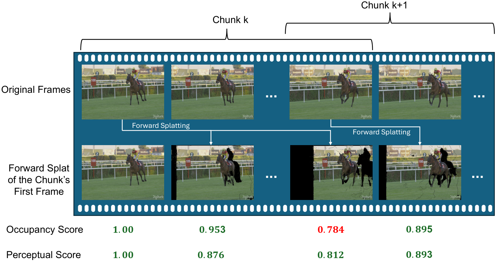
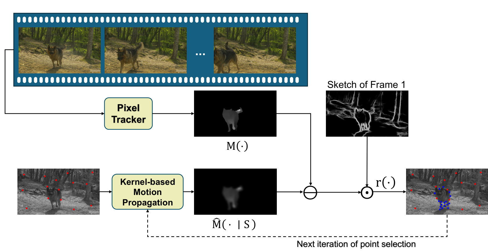

This work presents ActDiff-VC, a diffusion-based framework for video compression in the ultra-low-bitrate regime.
The method addresses the central challenge of controlling a generative video decoder using highly compact side information.
Rather than transmitting dense motion fields or detailed residual signals, ActDiff-VC adaptively selects keyframes according to scene dynamics and represents temporal motion using a sparse set of tracked point trajectories.
These compact conditioning signals are entropy-coded and provided to a conditional diffusion decoder, which reconstructs intermediate frames while maintaining strong perceptual realism.
By combining content-adaptive keyframe placement with budget-aware sparse trajectory selection, the framework achieves efficient compression without sacrificing important motion structure.
Experiments on UVG1 and MCL-JCV2 show that ActDiff-VC achieves up to 64.6% bitrate reduction at matched NIQE, improves KID by up to 64.6%, and improves FID by up to 37.7%, demonstrating the effectiveness of sparse active conditioning for perceptual video compression at extreme bitrates.
Method
ActDiff-VC is a generative codec: the encoder performs active sampling—it chooses when to spend bits on new keyframes and which motion cues to transmit—while the decoder runs a conditional diffusion process to generate the intermediate frames between keyframes.
Each clip is a variable-length GOP with a one-frame overlap to the next, so the receiver can stitch segments without a hard fixed interval.
The bitstream carries compressed boundary frames, a losslessly coded sparse trajectory set, and segment length.
Figure 1. Framework overview: dense tracks from the anchor frame, sketch-guided subsampling to sparse trajectories, and diffusion decoding conditioned on trajectories plus boundary frames.
Content-adaptive keyframe selection
A key challenge in ultra-low-bitrate video compression is deciding when to transmit a new keyframe.
Fixed keyframe intervals are inefficient because scene dynamics vary over time: static regions may require few keyframes, while rapid motion, occlusion, or scene changes require more frequent references.
ActDiff-VC uses content-adaptive keyframe selection to determine segment boundaries based on the usefulness of the current keyframe.
Starting from the first frame of a segment, the encoder estimates dense point trajectories and forward-splats the keyframe into future frames.
It then evaluates two signals: an occupancy score, which measures how much of the target frame is covered by the warped keyframe, and a perceptual similarity score, which measures how well the warped content matches the actual future frame.
When these scores fall below predefined thresholds for several consecutive frames, the current keyframe is considered no longer sufficient, and a new keyframe is inserted.
This prevents unnecessary keyframes in slowly changing scenes while still responding to complex motion or abrupt content changes.
As a result, ActDiff-VC allocates bits according to scene complexity, improving compression efficiency while preserving perceptual realism.

Figure 2. Content-adaptive keyframe selection: occupancy and perceptual similarity along the segment determine when to insert the next keyframe.
Sparse Trajectory Conditioning
After selecting the keyframes, ActDiff-VC must describe the motion inside each segment using as few bits as possible.
Transmitting dense motion fields would be too expensive in the ultra-low-bitrate regime, so the method instead represents temporal dynamics with a sparse set of tracked point trajectories.
The encoder first estimates dense point tracks from the segment’s initial frame across the remaining frames, using AllTracker6 for occlusion-aware, long-range correspondence.
It then selects only the most informative trajectories under a fixed bitrate budget.
This selection is guided by both motion reconstruction error and image structure (an edge-based sketch from HED7), so the transmitted points concentrate on regions that are important for perceptual reconstruction, such as object boundaries, edges, and areas with complex motion.
At the decoder, these sparse trajectories serve as motion conditioning for the diffusion model.
Together with the boundary keyframes, they provide compact guidance about how the scene should evolve over time, allowing the model to synthesize realistic intermediate frames without requiring dense motion information.
In this way, sparse trajectory conditioning preserves essential motion structure while keeping the side information small, making diffusion-based video compression practical at extreme compression rates.

Figure 3. Budget-aware sparse trajectory selection: RBF reconstruction from the current set (red), sketch-weighted residuals, and greedy addition of high-residual points (blue).
Conditional Diffusion Decoder
The final component of ActDiff-VC is a conditional diffusion decoder that reconstructs the missing frames within each segment.
Instead of decoding video from dense residuals or full motion fields, the decoder uses a generative prior to synthesize perceptually realistic content from compact side information.
For each segment, the decoder receives the compressed boundary keyframes and the selected sparse trajectory set.
The keyframes provide appearance anchors, while the trajectories provide motion guidance.
Conditioned on these signals, the diffusion model iteratively denoises a latent video representation and generates the intermediate frames.
This allows the decoder to recover visually realistic details even when only a small amount of information is transmitted.
Experiments
Quantitative comparison
Figure 4 plots each metric versus bits per pixel (BPP).
ActDiff-VC is strongest in NIQE and KID at very low rates: e.g., NIQE 5.08 at 0.0164 BPP on UVG and 5.10 at 0.0276 BPP on MCL-JCV, while DCVC-FM4 needs about 0.0372 and 0.0780 BPP respectively for similar NIQE—corresponding to 55.9% and 64.6% bitrate reductions.
For KID at similar low BPP, improvements over DCVC-FM4 are up to 64.6% (UVG) and 58.0% (MCL-JCV).
FID also improves in the ultra-low-rate regime (e.g., 37.7% vs. DCVC-FM4 on UVG at comparable bitrate; 22.8% on MCL-JCV).
LPIPS remains competitive with older DCVC variants though not below DCVC-FM4; versus EVC-PDM3 at roughly 0.032–0.036 BPP, ActDiff-VC improves LPIPS by about 49%, FID by about 80%, KID by about 91%, and NIQE by about 49% on average across the two datasets.
Figure 4. Quantitative comparison on UVG and MCL-JCV: LPIPS, FID, KID, and NIQE vs. BPP (lower is better).
Qualitative comparison
Figures 5 and 6 show side-by-side reconstructions at comparable (sometimes higher) bitrates for competing methods.
Numbers under each panel report per-video BPP, LPIPS, and FID.
Red boxes in these figures highlight difficult regions (fine texture, boundaries); ActDiff-VC tends to preserve structure with fewer blur and breakup artifacts than baselines at similar rates.
Figure 7 uses videoSRC20 from MCL-JCV2, where a scene cut occurs between frames 42 and 43.
ActDiff-VC detects the cut and inserts a new keyframe, so the first frame after the cut is reconstructed faithfully.
PLVC5 uses a fixed keyframe interval and cannot react to the abrupt change, so the reconstruction after the cut still looks like the previous scene with visible distortion.
EVC-PDM3 can adapt using diffusion-based forecasting at the encoder, but still achieves lower visual quality than ActDiff-VC in this example.
Figure 7. Content-adaptive keyframe selection around a scene cut.
Ablation: components
At fixed bitrate on UVG we ablate keyframe policy, trajectory point selection, and bidirectional conditioning. ΔLPIPS and ΔFID are vs. the full model (Adaptive GOP + sketch-weighted content-aware trajectories + bidirectional conditioning); Δ > 0 means worse.
Bidirectional conditioning. Turning it off hurts quality (e.g., larger ΔFID under adaptive GOP). Under fixed GOP with uniform sampling, adding bidirectional conditioning reduces ΔFID from about +59.4 to about +38.0 and ΔLPIPS from about +0.18 to about +0.13, showing it stabilizes synthesis.
Adaptive vs. fixed GOP. Adaptive GOP greatly reduces degradation: e.g., uniform grid + bidirectional: ΔFID drops from about +38.0 (fixed) to about +5.6 (adaptive), and ΔLPIPS from about +0.13 to about +0.02.
Trajectory selection. High-magnitude–flow sampling overweights large motion and hurts texture (ΔFID about +12.5 vs. +5.6 for uniform under adaptive GOP). Uniform is balanced but blind to content. Sketch-weighted content-aware selection matches the full design; dropping sketch weighting gives small but consistent hits (ΔFID about +1.42, ΔLPIPS about +0.02).
Ablation: Adaptive GOP thresholds
θocc and θperc control how early a GOP ends. Increasing either yields shorter GOPs, higher bpp, and better LPIPS/FID; θocc dominates the trade-off. We use θperc = 0.85 and θocc = 0.8 for bpp ≤ 0.05 (~0.0415 bpp).
Figure 8. Sensitivity of Adaptive GOP to θocc and θperc: BPP (×100), LPIPS, and FID (lower is better).
Conclusion
This work demonstrates that effective conditioning is essential for diffusion-based video compression in the ultra-low-bitrate regime.
ActDiff-VC shows that a generative decoder can produce perceptually realistic reconstructions when guided by a small but informative set of transmitted signals, including adaptively selected keyframes and sparse point trajectories.
The proposed framework reduces reliance on dense motion representations and residual coding by exploiting the generative prior of a conditional diffusion model.
Its content-adaptive keyframe selection allows the bitstream to respond to changes in scene dynamics, while its budget-aware trajectory selection preserves important motion information under strict rate constraints.
The experimental results indicate that ActDiff-VC provides favorable perceptual rate–distortion trade-offs compared with learned and diffusion-based video compression baselines.
These findings suggest that active sampling and sparse motion conditioning offer a promising direction for practical generative video compression, particularly in settings where bandwidth is severely limited and perceptual quality is more important than exact pixel-level fidelity.
References
A. Mercat, M. Viitanen, and J. Vanne, “UVG dataset: 50/120fps 4K sequences for video codec analysis and development,” in Proc. ACM Multimedia Systems (MMSys), 2020, pp. 297–302.
H. Wang et al., “MCL-JCV: a JND-based H.264/AVC video quality assessment dataset,” in IEEE Int. Conf. Image Processing (ICIP), 2016, pp. 1509–1513.
B. Li et al., “Extreme Video Compression with Prediction Using Pre-trained Diffusion Models,” in IEEE Int. Conf. Wireless Communications and Signal Processing (WCSP), 2024, pp. 1449–1455.
J. Li, B. Li, and Y. Lu, “Neural video compression with feature modulation,” in IEEE/CVF Conf. Computer Vision and Pattern Recognition (CVPR), 2024, pp. 26099–26108.
R. Yang, R. Timofte, and L. Van Gool, “Perceptual Learned Video Compression with Recurrent Conditional GAN,” in Int. Joint Conf. Artificial Intelligence (IJCAI), 2022, pp. 1537–1544.
A. W. Harley et al., “AllTracker: Efficient Dense Point Tracking at High Resolution,” arXiv:2506.07310, 2025.
S. Xie and Z. Tu, “Holistically-nested edge detection,” in IEEE Int. Conf. Computer Vision (ICCV), 2015, pp. 1395–1403.
Cite this work
A. Javadi, S. Saeedi Bidokhti, and T. Javidi,
Active Sampling for Ultra-Low-Bit-Rate Video Compression via Conditional Controlled Diffusion,
arXiv:2605.02849, 2026.
@misc{javadi2026actdiffvc,
title={Active Sampling for Ultra-Low-Bit-Rate Video Compression via Conditional Controlled Diffusion},
author={Javadi, Amirhosein and Saeedi Bidokhti, Shirin and Javidi, Tara},
year={2026},
eprint={2605.02849},
archivePrefix={arXiv},
primaryClass={cs.CV},
url={https://arxiv.org/abs/2605.02849},
}